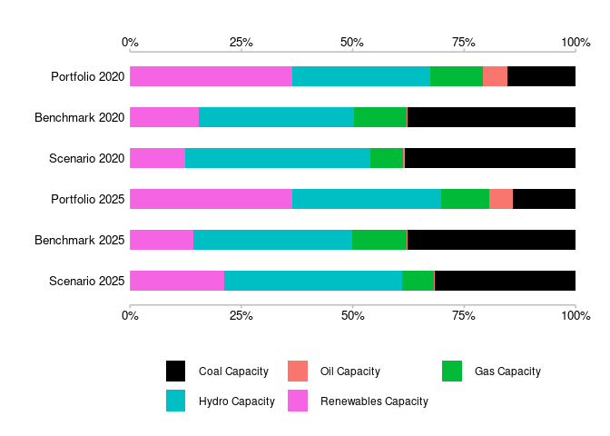
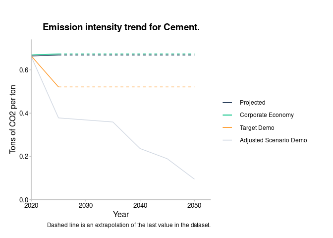
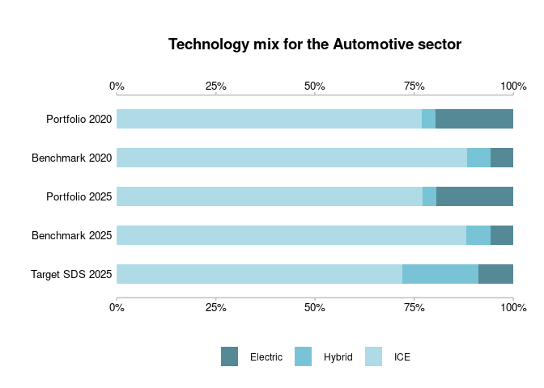

The goal of r2dii.plot is to provide users with plotting and data processing functions that will allow the users to create standard 2DII plots using PACTA_analysis or banks’ output data as input. The plots are in the form of ggplot objects.
Installation
You can install the development version of r2dii.plot from GitHub with:
# install.packages("devtools")
devtools::install_github("2DegreesInvesting/r2dii.plot")Example
-
market_sharedataset imitating the output of ‘r2dii.analysis::target_market_share()’.
market_share
#> # A tibble: 1,170 x 8
#> sector technology year region scenario_source metric production
#> <chr> <chr> <int> <chr> <chr> <chr> <dbl>
#> 1 automotive electric 2020 global demo_2020 projected 145942.
#> 2 automotive electric 2020 global demo_2020 corporate_econ… 8134869.
#> 3 automotive electric 2020 global demo_2020 target_cps 145942.
#> 4 automotive electric 2020 global demo_2020 target_sds 145942.
#> 5 automotive electric 2020 global demo_2020 target_sps 145942.
#> 6 automotive electric 2021 global demo_2020 projected 148212.
#> 7 automotive electric 2021 global demo_2020 corporate_econ… 8183411.
#> 8 automotive electric 2021 global demo_2020 target_cps 148361.
#> 9 automotive electric 2021 global demo_2020 target_sds 160625.
#> 10 automotive electric 2021 global demo_2020 target_sps 149016.
#> # … with 1,160 more rows, and 1 more variable: technology_share <dbl>
data_trajectory <- prep_trajectoryY(
market_share,
sector_filter = "power",
technology_filter = "oilcap",
region_filter = "global",
scenario_source_filter = "demo_2020",
end_year_filter = 2025,
normalize = TRUE
)-
plot_trajectoryY()is an alternative toplot_trajectoryB().
# `plot_trajectoryY()` takes more arguments
scenario_specs <- tibble(
scenario = c("sds", "sps", "cps"),
label = c("SDS", "STEPS", "CPS")
)
main_line_metric <- tibble(
metric = "projected",
label = "Portfolio"
)
additional_line_metrics <- tibble(
metric = "corporate_economy",
label = "Corporate Economy"
)
plot_trajectoryY(
data_trajectory,
scenario_specs_good_to_bad = scenario_specs,
main_line_metric = main_line_metric,
additional_line_metrics = additional_line_metrics
)
# more elaborate annotations, title and labels
data_trajectory <- prep_trajectoryY(
market_share,
sector_filter = "power",
technology_filter = "renewablescap",
region_filter = "global",
scenario_source_filter = "demo_2020",
value = "production",
end_year_filter = 2025,
normalize = TRUE
)
scenario_specs <- tibble(
scenario = c("sds", "sps", "cps"),
label = c(
"Sustainable Development Scenario",
"Stated Policies Scenario",
"Current Policies Scenario")
)
plot <- plot_trajectoryY(data_trajectory,
scenario_specs_good_to_bad = scenario_specs,
main_line_metric = main_line_metric,
additional_line_metrics = additional_line_metrics
)
plot +
ggplot2::theme(
plot.margin = ggplot2::unit(c(0.5, 7, 0.5, 0.5), "cm")
) +
ggplot2::labs(
title = "Production trajectory of Renewables Capacity technology\n in the Power sector",
subtitle = "The coloured areas indicate trajectories in reference to a scenario.\n The red area indicates trajectories below any sustainble scenario.",
x = "Year",
y = "Production rate (normalized to 2020)"
)
# Default colours, all data, added title
sector <- "power"
data <- prep_techmixY(
market_share,
sector_filter = sector,
years_filter = c(2020, 2025),
region_filter = "global",
scenario_source_filter = "demo_2020",
scenario_filter = "sds",
value = "technology_share"
)
plot <- plot_techmixY(data)
plot +
ggplot2::labs(title = "Technology mix for the Power sector")
# Custom colours, all data, no title
power_colors_custom <- tibble(
technology = c("coalcap", "oilcap", "gascap", "nuclearcap", "hydrocap", "renewablescap"),
label = c("Coal Capacity", "Oil Capacity", "Gas Capacity", "Nuclear Capacity", "Hydro Capacity", "Renewables Capacity"),
hex = palette.colors(n = length(technology), palette = "ggplot2")
)
plot <- plot_techmixY(data,
tech_colours = power_colors_custom
)
plot
# Default colours, selected data and labels (metric_type parameters), added title
sector <- "automotive"
data <- prep_techmixY(market_share,
sector_filter = sector,
years_filter = c(2020, 2025), region_filter = "global",
scenario_source_filter = "demo_2020",
scenario_filter = "sds", value = "technology_share"
)
metric_type_order = c(
"portfolio_2020", "benchmark_2020", "portfolio_2025",
"benchmark_2025", "scenario_2025"
)
metric_type_labels = c(
"Portfolio 2020", "Benchmark 2020", "Portfolio 2025",
"Benchmark 2025", "Target SDS 2025"
)
plot <- plot_techmixY(data,
metric_type_order = metric_type_order,
metric_type_labels = metric_type_labels
)
plot +
ggplot2::labs(title = "Technology mix for the Automotive sector")
data <- prep_timelineY(sda, sector_filter = "cement", extrapolate = TRUE)
# Plot and customize with ggplot2
plot_timelineY(data) +
labs(
title = "Emission intensity trend for Cement.",
x = "Year",
y = "Tons of CO2 per ton",
caption = "Dashed line is an extrapolation of the last value in the dataset."
)
-
timeline_specs()creates the default specs data frame for ‘plot_timeliney()’.
# You may use it as a template to create your custom specs
timeline_specs(data)
#> # A tibble: 4 x 3
#> line_name label hex
#> <chr> <chr> <chr>
#> 1 projected Projected #1b324f
#> 2 corporate_economy Corporate Economy #00c082
#> 3 target_demo Target Demo #ff9623
#> 4 adjusted_scenario_demo Adjusted Scenario Demo #d0d7e1